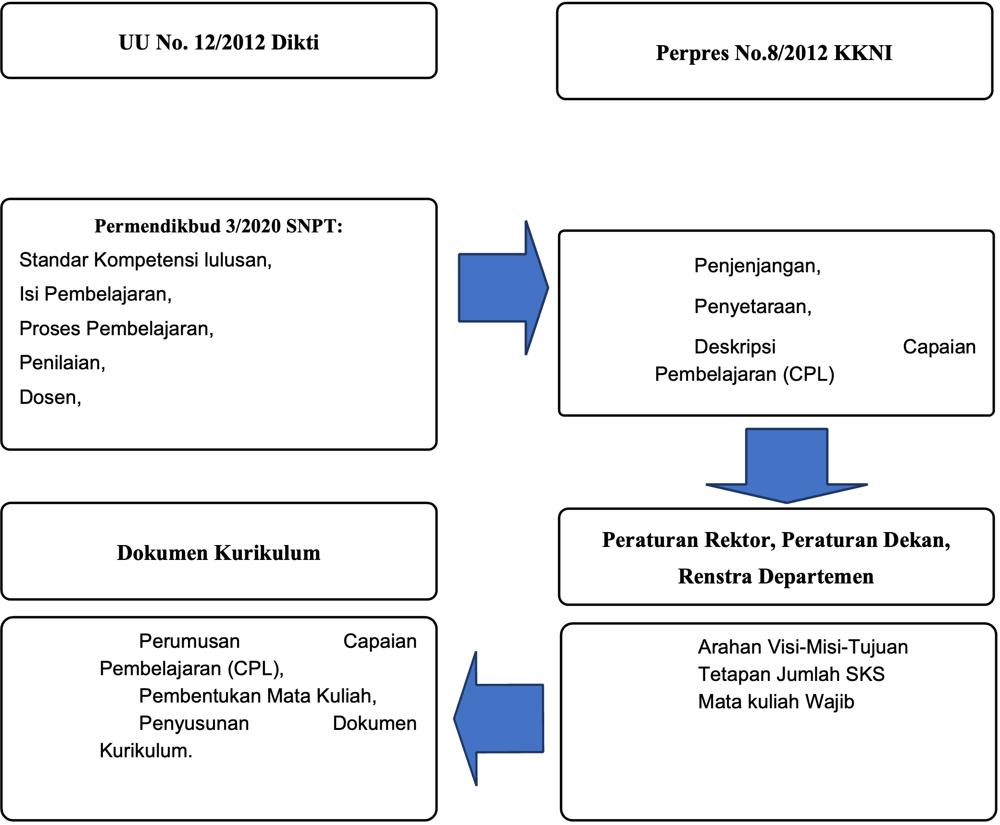
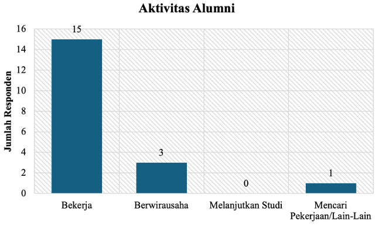
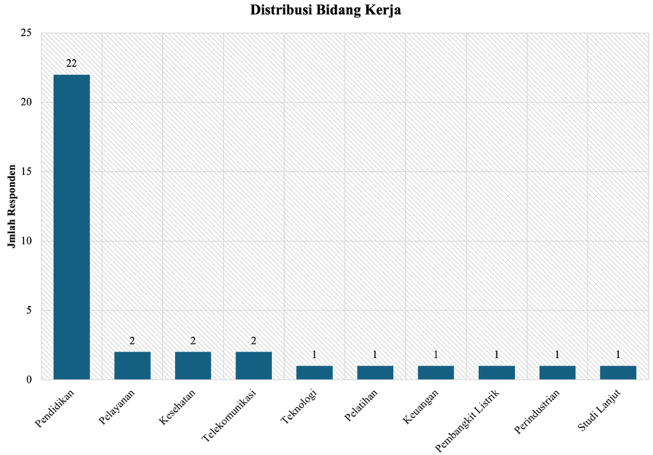
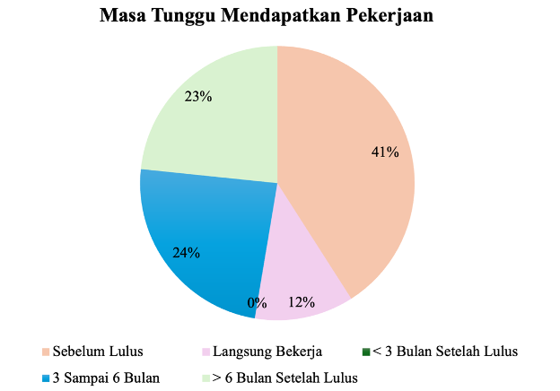
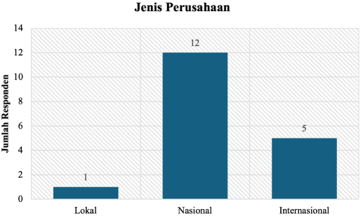
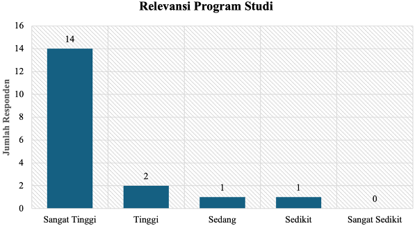
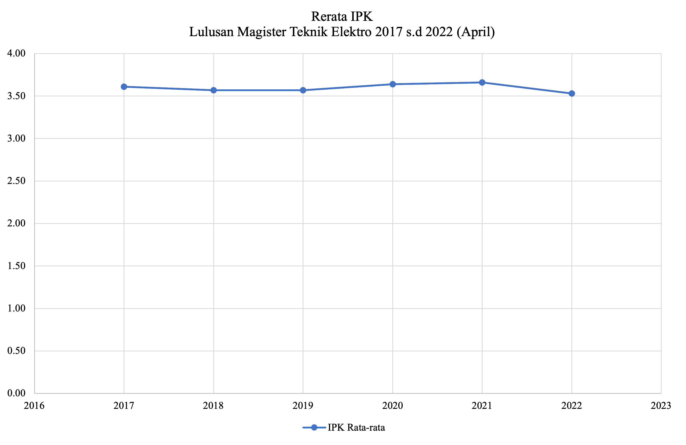
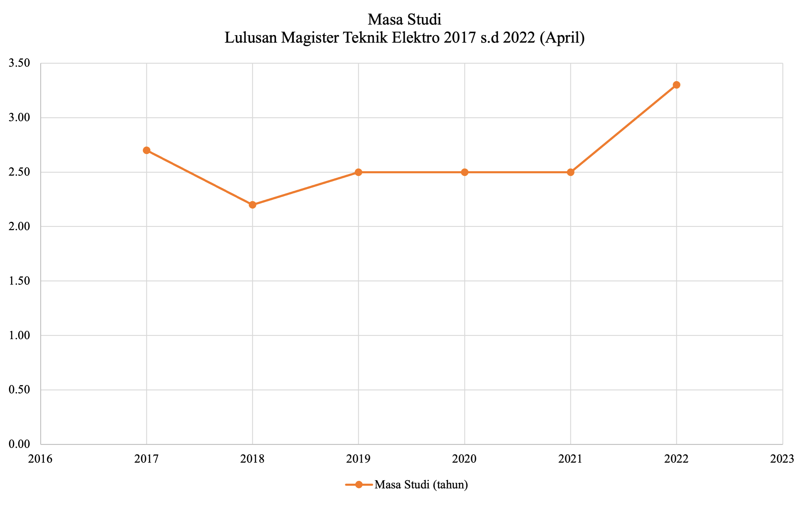
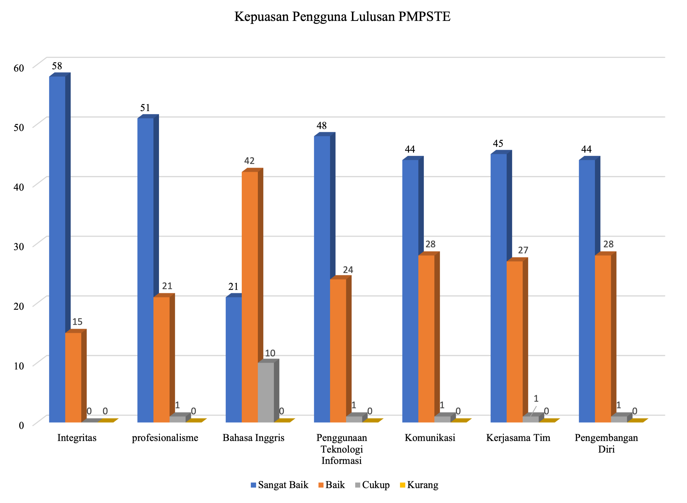

| Strengths | Weakness | |
|
|
|
| Opportunities | Strengths-Opportunities | Weakness-Opportunities |
|
|
|
| Threats | Strengths-Threats | Weakness-Threats |
|
|
|
1 Pendahuluan
1.1 Identitas Prodi
1.1.1 Perguruan Tinggi
Nama
Universitas Gadjah Mada
Visi
Sebagai pelopor perguruan tinggi nasional berkelas dunia yang unggul dan inovatif, mengabdi kepada kepentingan bangsa dan kemanusiaan, dijiwai nilai-nilai budaya bangsa berdasarkan Pancasila.
Misi
Melaksanakan pendidikan, penelitian, dan pengabdian kepada masyarakat serta pelestarian dan pengembangan ilmu yang unggul dan bermanfaat bagi masyarakat.
Tujuan
Tujuan jangka panjang UGM adalah sebagai berikut:
Mewujudkan UGM sebagai lembaga nasional ilmu pengetahuan, kebudayaan, dan pendidikan tinggi yang menanamkan dan mengajarkan ilmu pengetahuan dan kebudayaan.
Membentuk manusia susila yang mempunyai keinsafan serta bertanggung jawab terhadap kesejahteraan Indonesia pada khususnya dan dunia pada umumnya. Lima jati diri UGM yang meliputi:
universitas nasional;
universitas kerakyatan;
universitas Pancasila;
universitas perjuangan; dan
universitas pusat kebudayaan;
perlu terus termanifestasi dalam pemikiran, sikap, dan perilaku sivitas akademika UGM dalam mencapai visi, misi, dan tujuan. Oleh karena itu, UGM berkomitmen untuk terus memperkuat jati diri serta menerjemahkannya dalam konteks terkini. Jati diri inilah yang akan terus menjadi pedoman dalam menghadapi turbulensi zaman dan perubahan-perubahan besar yang berlangsung.
*Berdasar dokumen Rencana Strategis Universitas Gadjah Mada Tahun 2022-2027
1.1.2 Fakultas
Nama
Fakultas Teknik
Visi
Fakultas Teknik UGM menjadi lembaga pendidikan tinggi teknik berjejaring nasional dan global untuk penguatan peradaban baru, penguatan kemandirian dan kedaulatan bangsa di bidang IPTEK, dan perlambatan kenaikan entropi dunia, dalam rangka mengabdi kepada kepentingan bangsa dan kemanusiaan yang dijiwai oleh nilai-nilai budaya bangsa berdasarkan Pancasila.
Misi
Melaksanakan pendidikan, penelitian, dan pengabdian kepada masyarakat serta pelestarian dan pengembangan ilmu pengetahuan dan teknologi berbasis riset dan budaya bangsa yang unggul dan bermanfaat bagi masyarakat.
Menyelenggarakan pendidikan untuk menghasilkan manusia beretika dan mumpuni di bidang ilmu pengetahuan dan teknik yang berdaya guna dan mengabdi untuk kepentingan bangsa dan kemanusiaan.
Mengembangkan, menyebarluaskan, dan melestarikan ilmu pengetahuan dan teknik untuk kepentingan bangsa dan kemanusiaan.
Menumbuhkan dan mengembangkan kreativitas dan melaksanakan pengabdian kepada masyarakat yang berlandaskan budaya bangsa.
Mengembangkan kerja sama yang luas dengan lembaga di dalam dan di luar negeri.
Menjalankan tata kelola organisasi yang agile, dan memenuhi kriteria good governance
Tujuan
Mewujudkan Fakultas Teknik UGM sebagai lembaga pendidikan tinggi teknik bertaraf internasional yang unggul, inovatif dan bermartabat melalui: a. Menghasilkan lulusan yang unggul, inovatif dan humanis berakhlak mulia dengan menanamkan dan mengajarkan ilmu pengetahuan dan teknologi yang dilandasi nilai-nilai kearifan dan kebudayaan untuk memuliakan kemanusiaan dan peradaban bangsa yang maju sesuai cita-cita Proklamasi Kemerdekaan Republik Indonesia.
Menghasilkan karya penelitian ilmu pengetahuan dan teknologi yang menjadi rujukan nasional dan internasional.
Menghasilkan dan menyebarluaskan karya teknologi yang menjawab kebutuhan masyarakat dan berkontribusi dalam membangun kedaulatan bangsa dan negara serta pembangunan berkelanjutan.
Meningkatkan kemandirian dan kesejahteraan masyarakat yang berkelanjutan melalui pemberdayaan dan pengabdian kepada masyarakat.
Meningkatkan sinergi korsa dan kehidupan warga Fakultas Teknik UGM yang sehat, sejahtera dan bahagia melalui tata kelola yang sehat dan harmonis.
Membangun kerja sama saling menguntungkan dengan alumni, para pemangku kepentingan, dan mitra di dalam dan luar negeri untuk kemajuan dan kemaslahatan bersama
1.1.3 Departemen
Nama
Departemen Teknik Elektro dan Teknologi Informasi
Visi
Departemen Teknik Elektro dan Teknologi Informasi menjadi sumber inovasi universal di bidang teknik elektro, informasi, dan biomedis untuk kepentingan bangsa dan kemanusiaan yang dijiwai nilai-nilai budaya bangsa berdasarkan Pancasila.
Misi
- Melaksanakan tridarma perguruan tinggi yang mampu menginternalisasi nilai-nilai DTETI (excellent, teamwork, harmony, optimistic, smart, dan berintegritas: ETHOS for integrity) bagi kepentingan bangsa dan kemanusiaan.
- Mengembangkan lingkungan keilmuan yang mendorong tumbuhnya inovasi dalam pelaksanaan tridarma perguruan tinggi.
Tujuan
Mewujudkan DTETI sebagai penyelenggara pendidikan di bidang teknik elektro, informasi, dan biomedis melalui program sarjana dan pascasarjana yang berkualitas, dalam rangka menghasilkan lulusan yang memiliki kompetensi tinggi, berkarakter dan berintegritas.
Mengembangkan penelitian yang berkontribusi pada pengembangan keilmuan di bidang teknik elektro, informasi, dan biomedis untuk kepentingan bangsa Indonesia dan kemanusiaan secara universal.
Menyelenggarakan pengabdian kepada masyarakat yang berkontribusi secara aktif dalam usaha penyelesaian berbagai masalah bangsa dan kemanusiaan secara universal melalui penyebaran dan penerapan produk-produk keilmuan di bidang teknik elektro, informasi, dan biomedis.
Menjalin kerja sama yang strategis, sinergis, dan berkelanjutan dengan para mitra dalam rangka mendorong tumbuhnya keunggulan dan inovasi dalam pelaksanaan tridarma Perguruan Tinggi.
Menyelenggarakan tata kelola Departemen yang berkeadilan, transparan, partisipatif, akuntabel, dan terintegrasi antar bidang guna menunjang efektivitas dan efisiensi pemanfaatan sumber daya.
1.1.4 Program Studi
Nama
Program Magister Program Studi Teknik Elektro (PMPSTE)
Visi
Visi PMPSTE adalah menjadi sumber inovasi yang universal di bidang ilmu teknik elektro untuk kepentingan bangsa dan kemanusiaan dijiwai nilai-nilai bangsa berdasarkan Pancasila.
Misi
Misi PMPSTE adalah melaksanakan Tri Dharma Perguruan Tinggi untuk mencetak lulusan yang cakap dan berintegritas dan menghasilkan penelitian yang dapat dimanfaatkan bagi kepentingan bangsa dan kemanusiaan.
Tujuan
Menjadikan PMPSTE sebagai sumber inovasi dan keunggulan dalam bidang ilmu teknik elektro melalui: a. pengembangan pendidikan di bidang teknik elektro yang berkualitas dalam rangka menghasilkan lulusan yang memiliki kompetensi tinggi, berkarakter, dan berintegritas,
pengembangan penelitian yang berkontribusi pada pengembangan keilmuan bidang teknik elektro untuk kepentingan bangsa Indonesia dan kemanusiaan secara universal,
berkontribusi secara aktif dalam usaha penyelesaian masalah bangsa dan kemanusiaan secara universal melalui penyebaran dan penerapan produk-produk keilmuan dalam bidang teknik elektro,
pengembangan lingkungan akademik yang mendorong tumbuhnya keunggulan dan inovasi dalam pelaksanaan Tri Dharma Perguruan Tinggi.
1.1.5 Akreditasi
Program Magister Program Studi Teknik Elektro sejak 23 Mei 2023 sampai dengan 1 November 2025 terakreditasi dengan peringkat Unggul berdasarkan keputusan Badan Akreditasi Nasional Perguruan Tinggi (BAN-PT) nomor 1913/SK/BAN-PT/Ak.KP/M/V/2023.
- Jenjang Pendidikan
Jenjang pendidikan dari kurikulum ini adalah tingkat magister.
- Gelar Lulusan
Gelar lulusan yang akan diberikan adalah Master of Engineering (M.Eng.). Gelar ini diberikan berdasarkan Keputusan Rektor Universitas Gadjah Mada Nomor 292/P/SK/HT/2008 dan 364/P/SK/HT/2009. Lulusan program magister Teknik Elektro dapat berperan sebagai akademisi dan/atau peneliti yang kompeten di bidangnya, mampu bekerja secara individu maupun dalam tim, menjunjung tinggi etika ilmiah, serta memiliki semangat belajar sepanjang hayat. Mereka juga diharapkan memiliki jiwa kepemimpinan, etika profesional, dan komitmen terhadap pembelajaran seumur hidup di institusi pendidikan seperti universitas, politeknik, atau institut. Selain itu, lulusan dapat berkarier sebagai profesional yang mampu menyelesaikan permasalahan industri dengan pendekatan ilmiah dan terstruktur, serta mampu mengomunikasikan ide secara efektif. Mereka dapat bekerja secara individu atau tim, dan mampu memadukan aspek teknis Teknik Elektro dengan aspek manajemen dalam mendukung pencapaian tujuan institusi tempat mereka bekerja.
1.2 Latar Belakang
Perubahan kurikulum ini adalah tanggapan atas berbagai perubahan yang terjadi secara multidimensi baik pada sisi aturan, visi saintifik, serta berkembangnya kebutuhan pemangku kepentingan. Kerangka formal perubahan serta manifestasi realisasi kurikulum akan sangat kental berpegangan pada aspek aturan formal baik di tingkat nasional maupun di tingkat universitas. Sementara perubahan kondisi keilmuan hingga perubahan kebutuhan pemangku kepentingan akan menjadi landasan abstraktif yang memberikan panduan pada unsur realisasi struktural kurikulum. Peta aturan yang menjadi rujukan perubahan kurikulum disajikan pada Gambar 1.1 Pendidikan magister adalah bagian dari proses pendidikan tinggi yang berlandaskan pada Undang-undang Republik Indonesia Nomor 12 Tahun 2012 tentang Pendidikan Tinggi.

Pendidikan magister adalah bagian dari proses pendidikan tinggi yang berlandaskan pada Undang-Undang Republik Indonesia Nomor 12 Tahun 2012 tentang Pendidikan Tinggi. Posisi lulusan yang merupakan luaran pendidikan pascasarjana tingkat magister ini dipetakan posisinya dalam skup nasional dalam Peraturan Presiden Republik Indonesia Nomor 8 Tahun 2012 tentang Kerangka Kualifikasi Nasional Indonesia. Peraturan ini memandu dengan jelas arah pendidikan magister dengan menempatkannya pada level 8 dan memberikan deskripsi atas jenjang kualifikasinya.
Realisasi dari Kerangka Kualifikasi Nasional Indonesia (KKNI) pada tataran proses pendidikan memerlukan perumusan berbagai standar minimal yang harus terpenuhi sebagaimana diamanatkan oleh UU No. 12 tahun 2012 tentang Perguruan Tinggi pada Pasal 52 ayat 3. Standar ini, pada kurikulum sebelumnya tertuang dalam Standar Nasional Pendidikan Tinggi (SNPT) (Peraturan Menteri Pendidikan, Kebudayaan, Riset, dan Teknologi Republik Indonesia Nomor 53 Tahun 2023) yang digantikan oleh Penjaminan Mutu Pendidikan Tinggi (PMPT) (Peraturan Menteri Pendidikan Tinggi, Sains, dan Teknologi Nomor 39 Tahun 2025). Relasi berbagai aturan tersebut dapat dirangkum menjadi diagram seperti ditunjukkan pada Gambar 1.1.
Berbagai aturan di tingkat nasional diejawantahkan dalam kerangka aturan di tingkat UGM dalam berbagai aturan rektor terkait pendidikan pascasarjana. Kurikulum program magister pada dasarnya terkait erat dengan Peraturan Rektor UGM No. 11 Tahun 2016 tentang Pendidikan Pascasarjana. Kurikulum perlu disesuaikan karena terbitnya Peraturan Rektor UGM No. 18 Tahun 2019 tentang Penyelenggaraan Program Pascasarjana Berbasis Penelitian (by Research) di Lingkungan Universitas Gadjah Mada. Selanjutnya kerangka kurikulum disesuaikan dengan terbitnya Peraturan Rektor No. 23 Tahun 2024 yang menggantikan Peraturan Rektor No. 14 Tahun 2020.
Selain aturan, perubahan kurikulum juga dipicu oleh kesadaran bahwa bidang teknik elektro adalah bidang yang memberi warna pada perkembangan peradaban abad ini. Dengan sifatnya yang unik, ilmu ini bersimbiosis mendorong bidang ilmu lain untuk berakselerasi. Kemampuan unik ini lahir dari fakta bahwa teknik elektro mengakomodasi tiga dimensi dalam sebuah wadah yang kompak: dimensi energi-dimensi isyarat-dimensi informasi. Perwujudan ketiga dimensi tersebut dapat muncul secara mandiri-eksklusif pada wadah ilmu teknik elektro atau bersama ilmu lain mendukung kemajuan peradaban.
Capaian dekade ini, dari penyatuan ilmu teknik elektro dengan berbagai bidang ilmu lain, telah melahirkan visi-visi baru yang cenderung melahirkan tatanan baru menggantikan tatanan lama (era disrupsi). Dunia barat, diwakili Jerman, cenderung mewadahinya dalam skema industri generasi 4 (I4.0). Sementara dunia timur, yang diwakili Jepang, Korea, dan Tiongkok, menawarkan sudut pandang masyarakat generasi 5.0 (S5.0). Kedua tatanan ini adalah gabungan dari kesatuan energi-isyarat-informasi yang berinteraksi erat dengan berbagai bidang ilmu lain dalam kerangka tatanan sosial baru. Pandemi COVID-19 turut membawa unsur pemaksa perubahan zaman. Tumbuhnya generasi muda gen z dengan karakteristik digital native dan gaya belajar interaktif, mendorong perubahan kurikulum menuju pembelajaran yang lebih fleksibel, inovatif, dan terintegrasi dengan teknologi terkini. Perubahan zaman ini perlu disikapi dengan bijak pada struktur kurikulum baru ini.
Saat ini terjadi perubahan pada standar nasional pendidikan tinggi yang saat ini untuk bidang teknik elektro dilaksanakan oleh Lembaga Akreditasi Mandiri (LAM) Teknik. Hal ini juga akan mengubah struktur maupun standar kurikulum di bidang teknik elektro. Selain itu, PMPSTI di DTETI juga memperbarui kurikulumnya sehingga sinkronisasi dengan PMPSTI sangat perlu dilakukan.
Di samping itu, Peraturan Menteri Pendidikan Tinggi, Sains, dan Teknologi Nomor 39 Tahun 2025 (Permendiktisaintek Nomor 39 Tahun 2025) tentang Penjaminan Mutu Pendidikan Tinggi dan Peraturan Rektor UGM No. 23 Tahun 2024 yang mensyaratkan beban studi program magister minimal 36 SKS juga menjadi landasan penyesuaian kurikulum pada Kurikulum 2022 Versi Revisi-2. Distribusi bidang kerja lulusan PMPSTE yang mayoritas berada di bidang pendidikan memerlukan penguatan kemampuan penelitian.
1.3 Landasan Perubahan dan Dokumen Rujukan
1.3.1 Landasan Filosofis
Pendidikan adalah kegiatan normatif-ideal yang meskipun bersifat individual namun pada dasarnya memberikan kontribusi pada masyarakat. Dalam kerangka ini, pendidikan perlu selaras dengan kondisi yang terjadi pada masyarakat sehingga kontribusi yang diberikan dunia pendidikan hendaknya bersifat positif bagi kemanusiaan.
Lingkungan yang dihadapi masyarakat modern dapat dibagi menjadi lingkungan yang dekat dengan individu dan lingkungan yang lebih luas. Secara global, teknologi digital sangat mendominasi pergerakan masyarakat. Komputasi digital telah mampu membuat model-model kompleks menjadi real-time. Sebagai akibatnya, muncullah dunia baru yang bersifat maya atau dikenal dengan nama metaverse. Dunia maya ini menjadi nyata juga akibat kemampuan komunikasi digital dengan kecepatan tinggi. Namun meski telah lengkap, baik sarana-prasarana-perekayasa teknologi digitalnya, tanpa inovasi, tidak akan terwujud apa pun. Ketiga aspek ini bergabung menyusun visi insutrialisasi jilid empat atau dari sisi lain dinamakan visi masyarakat jilid lima. Visi global baru ini mengganggu tatanan lama pada tingkat lokal. Sehingga identitas setempat sangat mungkin terganggu. Pendidikan di PMPSTE sangat perlu untuk dapat menanggapi tantangan global namun harus tetap mampu menjaga tatanan lokal dalam kerangka nasionalisme. Aspek pendidikan ini merupakan visi pendidikan dari Ki Hadjar Dewantara yang dikenal dengan visi nasional-universal.
Pendidikan magister termaktub dalam KKNI pada level 8. Kurikulum ini disusun dengan berlandaskan pada KKNI yang di dalamnya terkandung semangat outcome-based education. Atribut lulusan yang dicapai saat lulus telah sebangun dengan kompetensi profesional pada jenjang kualifikasi kedelapan pada KKNI. Untuk dapat melakukan hal ini sekali lagi nilai-nilai ajaran Ki Hadjar Dewantara digunakan: Sistem among dan niteni-nirokke-nambahi (3N).
Dalam kerangka 3N, mahasiswa magister diizinkan untuk lulus setelah mampu menunjukkan kemampuan kontribusi pada dunia ilmu pengetahuan atau mencapai taraf nambahi meskipun tidak sedalam kontribusi mahasiswa doktor. Falsafah 3N dapat pula dipandang sebagai perjalanan (lelaku). Mahasiswa magister di PMPSTE akan ditemani perjalanan keilmuannya sejak dari niteni (mengenali-mengamati), nirokke (menirukan), dan nambahi (berkontribusi) dalam pola among.
Pola among yang bersifat menemani dirasa sesuai dengan jenjang pendidikan pascasarjana. Mengingat pada jenjang ini, siswa dituntut untuk mengasah sensitivitasnya baik secara tacit maupun eksplisit untuk menerapkan metode ilmiah pada konteks keilmuannya. Relasi dosen-mahasiswa dirasa membatasi ruang eksplorasi mahasiswa sehingga menghambat terbentuknya kemandirian. Dalam kerangka tersebut, pendidikan dengan pola among baik untuk diterapkan.
Sebagai ringkasan, kurikulum program magister ini melandaskan pada tiga filosofi Ki Hadjar Dewantara yaitu:
bersifat nasional-universal sehingga selaras dengan nilai Pancasila dan UUD 1945,
mahasiswa dituntut untuk menjalasi filosofi niteni-nirokke-nambahi,
Dilaksanakan dengan skema among yang mendudukkan peran dosen sebagai teman dalam perjalanan keilmuan.
1.3.2 Landasan Sosiologis
Perubahan kurikulum ini didasari oleh dinamika sosial yang berkembang pesat akibat transformasi digital, globalisasi, dan kemajuan teknologi yang terus berubah. Dalam konteks ini, lulusan Program Magister Program Studi Teknik Elektro dituntut untuk tidak hanya unggul dalam kompetensi teknis, tetapi juga adaptif terhadap perubahan, inovatif dalam menghadapi tantangan nyata, dan peka terhadap dampak sosial dari teknologi. Kurikulum baru perlu menanamkan kesadaran akan peran teknologi dalam kehidupan masyarakat, mendorong pemberdayaan melalui solusi keteknikelektroan. Dengan demikian, kurikulum ini diharapkan mampu mendukung pembangunan berkelanjutan dan tetap relevan dengan kebutuhan masyarakat modern.
1.3.3 Landasan Psikologis
Dalam kurikulum ini, mahasiswa program magister dipandang sebagai pembelajar yang sudah lebih dewasa dari mahasiswa program sarjana. Secara ideal, mahasiswa magister dianggap telah matang landasan ilmu dasar yang sudah dilalui di program sarjana sehingga siap mempelajari bidang ilmu secara lebih mendalam dan mampu menerapkan metode ilmiah untuk menghasilkan kontribusi keilmuan. Dengan pemahaman ini, program magister dalam kurikulumnya akan memberikan dukungan dalam bentuk pembimbingan dengan pola asuh among agar setiap mahasiswa dapat meniti langkah mengikuti urutan niteni-nirokke-nambahi. Kurikulum akan menekankan fungsi sebagai fasilitator dan katalisator dengan dukungan fasilitas baik sarana maupun prasarana yang dapat mendukung suksesnya pendidikan magister bidang teknik elektro.
1.3.4 Landasan Historis
Secara periodik, PMPSTE melakukan pembaruan terhadap kurikulumnya. Pada masing-masing periode, perbaikan terjadi untuk mengakomodasi poin signifikan tertentu. Kurikulum 2012 tumbuh dengan memperhatikan sudut pandang baru yaitu outcome-based education (OBE). Perwujudan dari sudut pandang baru tersebut muncul dari restrukturisasi mata kuliah yang lebih sederhana dan pernyataan eksplisit tentang program educational objective (PEO) atau standar kompetensi lulusan (SKL) serta program objective (PO) atau capaian pembelajaran lulusan (CPL). Kemampuan riset mahasiswa diasah dalam dua konsentrasi: 1) Sistem Tenaga Listrik (STL) dan 2) Sistem Isyarat dan Elektronis (SIE). Pengelompokan ini dilakukan dengan pertimbangan sebagai berikut.
Kemudahan dalam mengkonsolidasikan dan mengintegrasikan sumber daya yang ada, baik berupa kompetensi pendidik, ketersediaan penunjang pendidikan dan penelitian, serta hubungan dengan jejaring di luar.
Keluwesan dalam mengikuti perkembangan state of the art keilmuan di masing-masing bidang.
Perbaikan selanjutnya dilakukan pada 2017. Pada tahun ini fokus dilakukan pada pemenuhan unsur KKNI. Pendidikan program magister teknik elektro pada PMPSTE didesain untuk mempersiapkan lulusan memiliki kompetensi berikut.
Mampu mengembangkan pengetahuan, teknologi di dalam bidang teknik elektro melalui riset, sehingga dapat menghasilkan karya inovatif dan teruji.
Mampu memecahkan permasalahan ilmu pengetahuan dan teknologi di dalam bidang teknik elektro melalui pendekatan inter atau multidisipliner.
Mampu mengelola riset dan pengembangan yang bermanfaat bagi masyarakat dan keilmuan, serta mampu mendapat pengakuan nasional dan internasional.
Ketiga hal tersebut di atas selaras dengan deskripsi jenjang kualifikasi yang disebutkan pada Lampiran Peraturan Presiden Republik Indonesia No. 8 Tahun 2012 yang menetapkan program magister menempati level delapan dalam KKNI.
Kurikulum 2022 melanjutkan perbaikan dengan memperhatikan aspek disrupsi tatanan yang terjadi akibat inovasi ilmu dan kondisi pandemi COVID-19. Pada kurikulum ini dilakukan penyesuaian dan perbaikan akibat munculnya visi revolusi industri tahap keempat (I4.0) dan revolusi sosial tahap kelima (S5.0). Untuk memenuhi tantangan tersebut, lulusan program PMPSTE diperkuat penguasaan prinsip-prinsip metode ilmiahnya dengan pendefinisian mata kuliah penunjang seperti Metodologi Penelitian dan Filsafat Ilmu serta diperluas cakrawala pandangnya dengan mata kuliah pilihan sesuai bidang penelitiannya. Selain itu, skema amongyang mendudukkan peran dosen sebagai teman dalam perjalanan keilmuan semakin diperkuat dengan beberapa inovasi program seperti mempercepat residen di laboratorium dan memperbanyak program post-graduate symposium agar interaksi mahasiswa dan dosen pembimbing tesis terjadi lebih awal dan semakin intensif. Kemudian, kebutuhan kompetensi alumni yang tercermin dalam tracer study juga menjadi landasan perubahan kurikulum, sebagaimana akan dijelaskan lebih lanjut di subbab 1.4.
Kurikulum 2022 Versi Revisi-1 mengakomodasi Peraturan Rektor No. 23 Tahun 2024, bahwa jumlah SKS jenjang magister adalah 54 SKS dari yang semula 40 SKS. Tidak banyak yang berubah pada kurikulum ini. Arah kurikulum masih tetap mengacu pada Kurikulum 2022, namun terdapat beberapa kegiatan pada kurikulum ini yang semula hanya berlaku sebagai syarat kelulusan, pada kurikulum ini diberi bobot SKS. Perubahan SKS dijelaskan secara detail pada Bab 2 Struktur Kurikulum.
Kurikulum 2022 Versi Revisi-2 mengakomodasi Peraturan Menteri Pendidikan Tinggi, Sains, dan Teknologi Nomor 39 Tahun 2025 tentang Penjaminan Mutu Pendidikan Tinggi dan Peraturan Dekan No. 1 Tahun 2025 tentang Pendidikan Pasca Sarjana, bahwa jumlah SKS jenjang magister adalah minimal 36 SKS dari yang semula 54 SKS. Arah kurikulum masih tetap mengacu pada Kurikulum 2022, perubahan dilakukan untuk mengakomodasai mata kuliah wajib fakultas yang tertuang dalam Peraturan Dekan No. 1 Tahun 2025. Perubahan SKS secara lebih detail dijelaskan pada Bab 2 Struktur Kurikulum.
1.3.5 Landasan Yuridis
Rujukan aturan yang mendasari Kurikulum 2022 Versi Revisi-2 adalah:
Undang-undang No. 12 Tahun 2012 tentang Pendidikan Tinggi,
Peraturan Presiden No. 008 Tahun 2012 tentang Kerangka Kualifikasi Nasional Indonesia,
Peraturan Menteri Dalam Negeri No. 002 Tahun 2013 tentang Pedoman Pengembangan Sistem Pendidikan dan Pelatihan Berbasis Kompetensi,
Peraturan Menteri Pendidikan dan Kebudayaan No. 073 Tahun 2013 tentang Penerapan Kualifikasi Kompetensi Nasional Indonesia bidang Pendidikan Tinggi,
Peraturan Menteri Riset, Teknologi, dan Pendidikan Tinggi Republik Indonesia No. 50 Tahun 2018 tentang Perubahan atas Peraturan Menteri Riset, Teknologi, dan Pendidikan Tinggi No. 44 Tahun 2015 Tentang Standar Nasional Pendidikan Tinggi,
Peraturan Menteri Pendidikan Tinggi, Sains, dan Teknologi Nomor 39 Tahun 2025 (Permendiktisaintek Nomor 39 Tahun 2025) tentang Penjaminan Mutu Pendidikan Tinggi,
Peraturan Menteri Pendidikan dan Kebudayaan No. 3 Tahun 2020 tentang Standar Nasional Pendidikan Tinggi,
PP RI No. 67 Tahun 2013 tentang Statuta UGM,
Keputusan Rektor Universitas Gadjah Mada Nomor 292/P/SK/HT/2008 tentang Gelar dan Sebutan Lulusan Program Pascasarjana (S2) Universitas Gadjah Mada,
Peraturan Rektor UGM No. 11 Tahun 2016 tentang Pendidikan Pascasarjana,
Peraturan Rektor UGM No. 18 Tahun 2019 tentang Penyelenggaraan Program Pascasarjana Berbasis Penelitian (by Research) di Lingkungan Universitas Gadjah Mada,
Peraturan Rektor UGM No. 14 Tahun 2020 tentang Kerangka Dasar Kurikulum,
Peraturan Rektor Universitas Gadjah Mada Nomor 23 Tahun 2024 tentang Pendidikan.
Peraturan Dekan Fakultas Teknik Universitas Gadjah Mada No. 1 Tahun 2025 tentang Pendidikan Program Pascasarjana.
1.4 Tracer Study dan Stakeholder Input
Kurikulum 2022 Versi Revisi-2 merupakan penyesuaian Kurikulum 2022 dengan Peraturan Menteri Pendidikan Tinggi, Sains, dan Teknologi Nomor 39 Tahun 2025 tentang Penjaminan Mutu Pendidikan Tinggi dan Peraturan Dekan No. 1 Tahun 2025 tentang Pendidikan Pasca Sarjana. Pada kurikulum ini, tidak ada perubahan mendasar pada landasan filosofis, psikologis, historis, yuridis, dan sosiologis, sehingga tracer study tetap menggunakan tracer study sebelumnya. Dalam tahap pemutakhiran kurikulum, hasil tracer study dengan responden alumni dan pengguna alumni merupakan rujukan yang penting. Hasil tracer study dapat memberikan evaluasi atas ketercapaian outcome pendidikan setelah 1–5 tahun pasca kelulusan. Departemen melalui tim tracer study melakukan survei terhadap alumni PMPSTE angkatan 2011–2017 yang melalui proses pendidikan di PMPSTE. Beberapa hasil tracer study yang dilaksanakan di tahun 2023 menggunakan data dari 34 responden tergambar sebagai berikut.
Gambar 1.2 menunjukkan bahwa lulusan PMPSTE hampir semuanya bekerja. Gambar 1.3 (survey tahun 2022) menunjukkan bahwa distribusi karier lulusan PMPSTE cukup beragam dengan proporsi terbesar bekerja di bidang kerja pendidikan yaitu di perguruan tinggi serta pemerintahan. Fakta ini menjadi pertimbangan bagi tim kurikulum dan program studi dalam memperbarui profil lulusan PMPSTE.


Gambar 1.4 menunjukkan grafik lama tunggu kerja, yaitu seberapa lama lulusan dapat atau mulai memasuki dunia kerja sejak kelulusannya. Informasi terhadap masa tunggu tersebut bertujuan untuk mengetahui gambaran potensi serapan kerja alumni Program Magister Program Studi Teknik Elektro dalam dunia kerja. Hasil tracer study menunjukkan bahwa 7 responden telah memperoleh pekerjaan bahkan sebelum menyelesaikan studi, sementara 2 responden langsung bekerja setelah kelulusan. Sebanyak 5 responden memperoleh pekerjaan dalam jangka waktu 3 hingga 6 bulan setelah kelulusan, dan 4 responden lainnya dalam rentang waktu lebih dari 6 bulan. Meskipun demikian, tidak ada responden yang memperoleh pekerjaan lebih dari 12 bulan setelah kelulusan. Hal ini menunjukkan bahwa lulusan PMPSTE relatif mendapatkan pekerjaan dengan masa tunggu yang tidak terlalu lama, yaitu kurang dari 1 tahun.

Di sisi jenis perusahaan tempat bekerja ditunjukkan pada Gambar 1.5. Mayoritas bekerja di tingkat nasional, dengan 12 responden, 5 responden bekerja di perusahaan internasional, dan 1 responden bekerja di tingkat lokal. Jumlah responden ini merupakan sampel dari lulusan tahun 2023 dan dianggap mewakili jenis perusahaan tempat lulusan.

Gambar 1.6 menunjukkan relevansi program studi terhadap bidang pekerjaan. Berdasarkan hasil tracer study, sebanyak 14 responden menyatakan bahwa relevansi antara program studi yang diambil dengan bidang pekerjaan mereka tergolong sangat tinggi, sementara 2 responden menilai relevansinya tinggi. Adapun tingkat relevansi sedang dan rendah masing-masing diungkapkan oleh 1 responden. Tidak terdapat responden yang menyatakan relevansi program studi dengan bidang pekerjaan mereka sangat rendah.



Gambar 1.7 dan Gambar 1.8 adalah survey tentang IPK lulusan dan lama masa studi (survey tahun 2022). Gambar 1.7 menunjukkan bahwa dari data lulusan PMPSTE tahun 2017 sampai dengan 2021 rerata IPK mahasiswa adalah 3,60 dengan IPK tertinggi adalah 4,00 dan IPK terendah 3,00. Hasil tracer study memperlihatkan bahwa mayoritas alumni Program Magister Program Studi Teknik Elektro lulus dengan Indeks Prestasi Kumulatif yang sangat baik dengan rerata IPK kelulusan berada pada rentang 3,51-3,75 skala 4 yaitu sebanyak 14 responden. Sebanyak 9 responden lulus dengan rentang IPK 3,26-3,50; sebanyak 7 responden lulus dengan rentang IPK 3,76-4,00; dan sebanyak 2 responden lulus dengan rentang IPK 3,01-3,25. IPK rerata total lebih dari 3,50. Gambar 1.8 menunjukkan masa studi rerata adalah 2,5 tahun. Hasil tracer study menunjukkan bahwa mayoritas responden menempuh lama studi di PMPSTE DTETI FT UGM dalam rentang waktu antara 1 sampai 1,5 tahun dan rata-rata responden menempuh masa studi antara 2 tahun sampai 3,5 tahun. Hal ini perlu menjadi pertimbangan dalam perbaikan kurikulum agar mayoritas mahasiswa PMPSTE bisa menyelesaikan studinya tepat waktu.

Gambar 1.9 menunjukkan mayoritas pengguna lulusan PMPSTE yang puas adalah bidang pendidikan dan pemerintahan (survey tahun 2022). Dari gambar tersebut, terlihat bahwa lulusan PMPSTE menunjukkan standar kinerja yang sangat memuaskan. PMPSTE berkomitmen untuk menanamkan nilai-nilai profesional kepada mahasiswa sebagai bekal dalam meniti karir di bidang teknik. Nilai-nilai ini menjadi dasar dalam merumuskan program educational objectives (PEO) yang mencerminkan kualitas lulusan yang diharapkan sejak mereka menyelesaikan studi. Perumusan PEO ini melibatkan masukan dari berbagai pihak, termasuk stakeholders program yang diwakili oleh advisory board, serta mengacu pada visi dan misi berjenjang dari UGM hingga program studi. Penjaringan pendapat dan masukan dilakukan melalui mekanisme workshop, kunjungan konsultasi, dan berbagai pertemuan baik formal atau pun informal (ditunjukkan pada Lampiran H). Hasil perumusan ini menghasilkan dua profil utama lulusan. Pertama, sebagai akademisi, lulusan diharapkan menjadi peneliti atau pendidik yang kompeten, menjunjung tinggi etika ilmiah, mampu bekerja secara individu maupun dalam tim, memiliki jiwa kepemimpinan, dan berkomitmen pada pembelajaran sepanjang hayat di institusi pendidikan seperti universitas atau politeknik. Kedua, sebagai profesional, lulusan dituntut mampu memecahkan masalah di industri secara ilmiah dan terstruktur, mengomunikasikan ide secara efektif, serta bekerja sama dalam tim maupun mandiri. Mereka juga diharapkan mampu mengintegrasikan keahlian Teknik Elektro dengan manajemen demi mendukung pencapaian tujuan organisasi, termasuk di lingkungan pemerintahan.
1.5 Analisis SWOT
Tabel 1.1 menunjukkan analisis SWOT atas kurikulum 2017 serta kondisi program studi/departemen secara umum. Melihat beberapa poin strength dan weakness yang ada maka PMPSTI menyusun strategi pengembangan dengan mempertahankan poin strength yang sudah tercapai dan memperbaiki weakness secara sistemis melalui perbaikan struktur kurikulumnya. Konsep Outcome-based Education (OBE) dan kesesuaian kurikulum dengan standar SNPT, KKNI, Visi UGM, Visi FT UGM, dan Visi DTETI tetap dipertahankan dan diselaraskan dengan Program Sarjana Teknologi Informasi. Di sisi lain, lemahnya ilmu dasar seperti statistika akan dijawab dengan penguatan materi tersebut di kurikulum 2022 Versi Revisi-2. Selain itu, untuk menjawab adanya Peraturan Rektor UGM no 18 tahun 2019, pada kurikulum PMPSTI 2022 Versi Revisi-2 ditambahkan jalur pendidikan magister berbasis riset. Pada aspek opportunity, melihat adanya peluang yang begitu besar terhadap kebutuhan lulusan di bidang teknologi informasi, maka kurikulum 2022 Versi Revisi-2 menyediakan empat konsentrasi untuk dipilih oleh setiap mahasiswa sesuai keminatannya. Keempat konsentrasi tersebut meliputi, konsentrasi smart-Government yang menjadi ciri dari PMPSTI FT UGM, konsentrasi analisis data dan kecerdasan tersebar (data analytic and pervasive intelligence), konsentrasi rekayasa perangkat lunak berpusat pada manusia (human centered software engineering), serta network and cybersecurity. Melalui konsentrasi ini diharapkan PMPSTI bisa menjawab kebutuhan lulusan di bidang teknologi informasi yang berkualifikasi sesuai tren kebutuhan di era Industri 4.0 antara lain Internet of Things, Big Data dan Artificial Intelligence (kecerdasan buatan) serta Society 5.0.
Analisis strength-weakness-opportunity-threat (SWOT) yang dilakukan terhadap Kurikulum 2022 Versi Revisi-2 dan pelaksanaannya, serta kondisi program studi/departemen secara umum, memberikan hasil seperti ditunjukkan pada Tabel 1.1 Dalam membaca analis SWOT tersebut, perlu disadari bahwa UGM memiliki tujuan jangka panjang sebagai berikut. 1. Mewujudkan UGM sebagai lembaga nasional ilmu pengetahuan, kebudayaan, dan pendidikan tinggi yang menanamkan dan mengajarkan ilmu pengetahuan dan kebudayaan kepada mahasiswa demi kelangsungan dan kehidupan manusia pada umumnya, demi perkembangan bangsa dan rakyat pada khususnya, sebagai penjelmaan dan pelaksanaan Pancasila dan Undang-Undang Dasar Negara Republik Indonesia Tahun 1945 (UUD 45), serta demi tercapainya cita-cita Proklamasi Kemerdekaan sebagaimana ditentukan dalam Pembukaan UUD 45.
- Membentuk manusia susila yang mempunyai keinsafan bertanggung jawab atas kesejahteraan Indonesia pada khususnya dan dunia pada umumnya, dalam arti berjiwa bangsa Indonesia, berbudaya Indonesia, dan mempunyai dasar keinsafan hidup berketuhanan Yang Maha Esa; berperi kemanusiaan yang adil dan beradab; demokratis; diliputi kenyataan dan kebenaran; cerdas; kreatif; terampil; mampu berkomunikasi; dan berkesadaran lingkungan untuk melaksanakan tanggung jawabnya terhadap pembangunan, pemeliharaan dan pengembangan kebudayaan hidup kemasyarakatan; serta masa depan bangsa dan negara Indonesia pada khususnya dan umat manusia pada umumnya.
Tujuan jangka menengah adalah UGM harus berdaya saing melalui keunggulan komparatif dalam pengembangan ilmu pengetahuan dan teknologi. 1. Berkembang menjadi smart digital university bukan hanya sebagai produk teknologi tetapi juga dalam cara berpikir atau logika kerja.
Berkontribusi dalam pembangunan bangsa untuk memanfaatkan bonus demografi secara optimal dan keluar dari middle income trap, melalui pengembangan ilmu pengetahuan, teknologi, dan inovasi, serta pengembangan SDM yang unggul, berkualitas, dan berdaya saing.
Berkontribusi secara strategis dalam pencapaian visi Indonesia 2045.
Kompetitif untuk memanfaatkan dan menciptakan peluang dengan senantiasa update dan upgrade terhadap situasi terkini agar tetap relevan, dapat bertahan, bahkan menjadi yang terdepan.
Dengan melihat Tabel 1.1, maka diperlukan strategi untuk menyusun dan melaksanakan kurikulum baru. Beberapa strategi yang akan dilakukan antara lain:
penguatan orientasi keilmuan yang berfokus pada pengembangan keilmuan berbasis keunggulan dan keunikan DTETI untuk peningkatan kemaslahatan masyarakat Indonesia,
penguatan kerja sama nasional dan internasional,
keselarasan dengan aturan yang berlaku untuk menjamin kontinuitas program dan kompatibilitas dengan berbagai pihak,
memperkuat kesinambungan antara kurikulum Program Sarjana Program Studi Teknik Elektro dengan Program Magister Program Studi Teknik Elektro untuk mendukung lulusan yang dibutuhkan pasar,
memperkuat kerja sama mitra lembaga/badan pemerintahan dan juga industri.
1.6 Tujuan Pengajuan Kurikulum
Kurikulum ini diajukan guna mengakomodasi berbagai perubahan yang terjadi dalam rentang lima tahun sejak Kurikulum 2017 dan dua tahun sejak Kurikulum 2022 hingga saat ini. Penyelarasan terjadi atas alasan filosofis, sosiologis, psikologis, historis, hingga yuridis. Dasar-dasar aturan yang digunakan untuk menyesuaikan antara lain KKNI dan SN-Dikti. Poin-poin perbaikan juga dipandu oleh analisis SWOT. Semuanya akan bermuara pada aspek administratif yang tertuang dalam struktur perkuliahan, detail silabus, dan luaran pembelajaran yang diharapkan. Beberapa perbedaan pokok Kurikulum 2022 Versi Revisi-2 dengan Kurikulum 2022 antara lain:
Jumlah SKS pada Kurikulum 2022 sejumlah 40 SKS menjadi 36 SKS.
penambahan jalur PMPSTE-Berbasis Perkuliahan dan Penelitian yang mengakomodasi kerja sama dengan institusi lain,
penguatan kegiatan penelitian, penulisan, dan publikasi ilmiah untuk memperkuat kemampuan penyebarluasan hasil penelitian mahasiswa PMPSTE,
pembaruan mata kuliah pilihan yang diselaraskan dengan perkembangan di bidang teknik elektro dan mata kuliah wajib fakultas sebagaimana dituangkan dalam Peraturan Dekan Fakultas Teknik Universitas Gadjah Mada No. 1 Tahun 2025 tentang Pendidikan Program Pascasarjana.